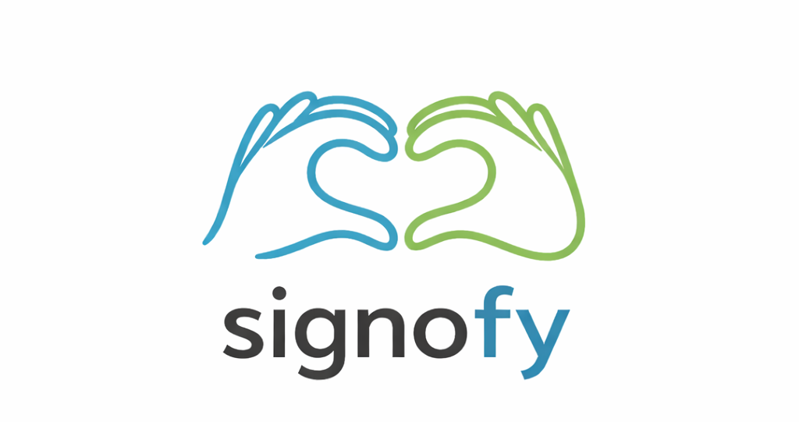
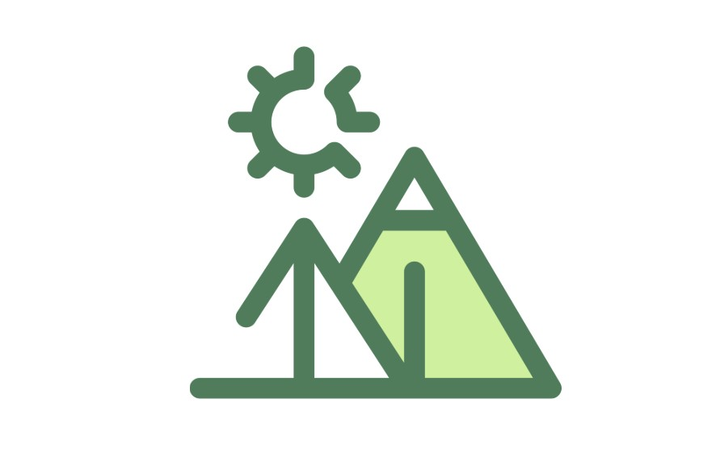
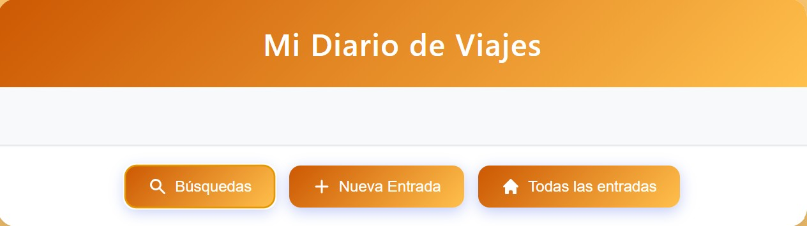
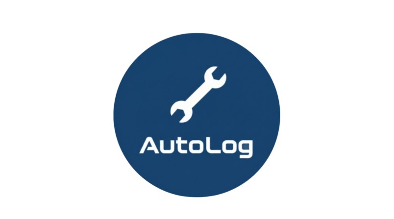

Premio Nacional de Robótica
Cómo construimos un robot siguelíneas con C++, Arduino y un algoritmo propio para el ASTI Robotic Challenge.
Leer postPortfolio · DAM
Estudiante de Desarrollo de Aplicaciones Multiplataforma, apasionada por construir software con propósito. Premio Nacional de Robótica 2025. Cada línea de código es un paso más.

Sobre mí
Desde pequeña siempre sentí curiosidad por cómo funcionan las cosas. No fue hasta hace poco que descubrí lo mucho que me apasiona la informática: lo que empezó como un interés pasajero se convirtió en vocación.
Estudio Desarrollo de Aplicaciones Multiplataforma y cada día aprendo algo nuevo: desde lógica de programación hasta diseño de interfaces, pasando por bases de datos y arquitectura de software.
Fuera del código, soy monitora voluntaria de educación no formal y apoyo iniciativas como STEM Girls para fomentar la presencia de mujeres en tecnología. Cada error es una oportunidad de aprendizaje.
Habilidades
Trayectoria
Desarrollo, mejoras y programación de aplicaciones funcionales para su uso en la universidad.
Comercial de telecomunicaciones, trabajo por objetivos y atención al cliente. Puçol, Valencia.
Trabajo en proyectos reales dentro del equipo de desarrollo. Sagunto, Valencia.
ASTI Robotic Challenge 24/25: distinción a nivel nacional. Robot siguelíneas programado en C++ con sensores infrarrojos y algoritmo de corrección propio.
Enseñanza de valores éticos, campamentos y actividades. Apoyo a la iniciativa STEM Girls para promover la inclusión de mujeres en tecnología.
Ciclo formativo en Desarrollo de Aplicaciones Multiplataforma. Software, apps móviles, bases de datos y arquitectura de aplicaciones.
Mantenimiento de ordenadores, contratación de servicios y atención al cliente. Valencia.
Ciclo formativo en Sistemas Microinformáticos y Redes.
Proyectos

App gamificada para aprender Lengua de Signos Española (LSE) de forma gratuita y accesible. Sistema de XP, rachas, lecciones por niveles y diccionario visual construido con la comunidad sorda.

Robot siguelíneas multifunción para el ASTI Robotic Challenge nacional. Programado en C++ con sensores infrarrojos sin librerías externas. Algoritmo de corrección propio de alta precisión.

Aplicación web interactiva para descubrir Valencia. Proyecto final intermodular de 1.º DAM: rutas y lugares de la ciudad con contenido dinámico. Desplegada con Docker.

App fullstack para registrar y gestionar aventuras. API REST con Node.js, Express y MongoDB. CRUD completo con persistencia en base de datos.

Contribuidora - App Android (Kotlin)
Plataforma multiplataforma para gestión de talleres mecánicos. Mi parte: app Android en Kotlin con consumo de API REST. Integra backend Spring Boot y app de escritorio Electron. Proyecto final de 2.º DAM.
Posts
Un espacio para contar proyectos con más calma: qué problema había, cómo lo resolví y qué me llevé por el camino.
Contacto